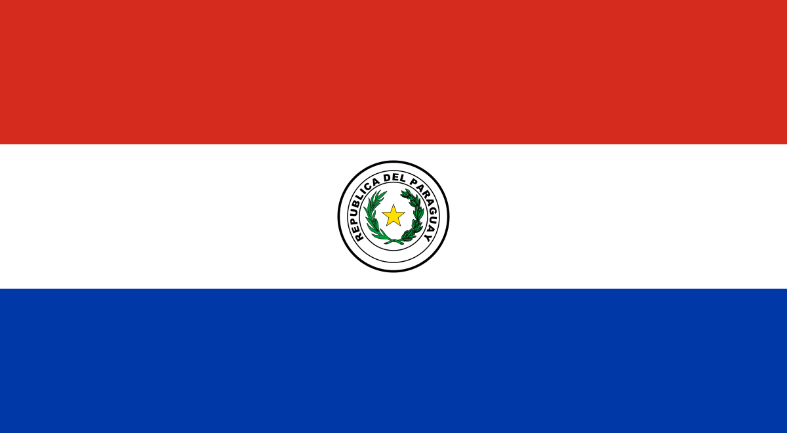

Las primeras plazas
Comienza su camino en el freestyle en Santa Rita junto a Knes Crew. Nace el nombre Joako KC y encuentra apoyo en AKA Vagger.

CULTURA · MÚSICA · COMUNIDADPARAGUAYUN PUNTO DE ENCUENTRO PARA LA ESCENA
Un espacio para descubrir proyectos, conectar talentos y hacer crecer la música hecha en Paraguay.
CULTURA VIVA · PARAGUAY
Un punto de encuentro para descubrir, escuchar y conectar con artistas paraguayos. Música nueva, voces propias y una comunidad que crece sin pedir permiso.
DESCUBRÍ A LOS ARTISTAS ↓Proyectos independientes, identidades distintas.
Un mismo lugar para encontrarlos.
UNA PLATAFORMA CREATIVA
Un sello discográfico y espacio creativo que acompaña el desarrollo de artistas, música y proyectos audiovisuales. ECO forma parte del ecosistema musical paraguayo, con su propia identidad y su propia casa.
ENTRAR A ECO STUDIOS ↗ARTISTA INDEPENDIENTE · PARAGUAY
Un proyecto independiente con espacio para desarrollar una identidad sonora propia, explorar ideas y conectar con nuevos públicos. Esta página reúne su acceso oficial y servirá como punto de partida para sumar lanzamientos, colaboraciones y novedades confirmadas.
ESCUCHÁ SU MÚSICA
ARTISTA INDEPENDIENTE · PARAGUAY
DEL FREESTYLE A UNA NUEVA IDENTIDAD SONORA
Una historia que empezó en las plazas y sigue buscando nuevos sonidos.
SONIDO PROPIO · HISTORIA REAL
Rap, boom bap y una búsqueda que no se queda quieta. Abrí el canal oficial para escuchar sus publicaciones y descubrir las canciones que forman parte de su recorrido.
BUSCAR “MITAI MALEDUCADO” ↗RAÍCES PARAGUAYAS
Antes de los estudios y los lanzamientos, hubo freestyle, cuadernos y una comunidad que lo impulsó a confiar en su voz.
Joako nació en Asunción, capital del Paraguay. Cuando tenía apenas nueve meses, se trasladó con su familia a Santa Rita, Alto Paraná, ciudad donde creció y donde, años más tarde, comenzó a construir su vínculo con la música y la cultura hip-hop.
En 2017 empezó a participar en el freestyle en las plazas junto a Knes Crew (KC), su primer grupo. De esa etapa nació el nombre Joako KC. Allí conoció a AKA Vagger, fundador de la crew, quien lo impulsó a confiar en su talento, seguir improvisando y demostrar sus habilidades en las batallas.
A finales de 2018 se mudó a Asunción y participó en Batalla de Rimas, una de las competencias que ayudaron a popularizar el freestyle en la capital. Allí conectó con otros exponentes de la escena urbana y con artistas que también comenzaban a trasladar sus rimas desde las batallas hacia la música.
Aunque su acercamiento a la música había comenzado en 2017, en 2019 escribió su primera canción, con una identidad marcada por el rap y el boom bap.
Comienza su camino en el freestyle en Santa Rita junto a Knes Crew. Nace el nombre Joako KC y encuentra apoyo en AKA Vagger.
Se instala en Asunción, participa en Batalla de Rimas y empieza a escribir sus primeras canciones.
Gana una competencia virtual de freestyle durante la pandemia. El premio de grabación se convierte en su primer tema, un boom bap.
Con Nando Gandull rescata una letra escrita a los 15 años. La graban en 2021 y la publican en 2022; el videoclip supera las 10.000 visualizaciones en YouTube.
Publica su primer reggaetón y abre una nueva puerta sonora más allá del rap y el boom bap.
Su primera presentación en vivo fue en 2019. En 2022 empezó a tocar con mayor frecuencia y continuó presentándose durante los años siguientes, incluso mientras reducía sus lanzamientos en solitario para enfocarse en su vida personal.
Retoma colaboraciones, entre ellas con Fezet en SoundCloud, mientras explora nuevos sonidos antes de definir su próxima etapa musical.
PRIMER TEMA · BOOM BAP
La grabación que convirtió una victoria en el freestyle en su primera experiencia formal de estudio.
CON NANDO GANDULL · 2022
Una letra escrita años antes, recuperada junto a Nando y convertida en uno de sus hitos iniciales.
PRIMER REGGAETÓN · 2022
Un primer paso hacia otros ritmos y una muestra de su voluntad de explorar más allá del rap.
EL PRÓXIMO CAPÍTULO TODAVÍA SE ESTÁ ESCRIBIENDO
Desde las plazas de Santa Rita hasta sus exploraciones actuales, Joako sigue construyendo su camino como artista independiente.
SEGUIR A JOAKO EN YOUTUBE ↗ARTISTA INDEPENDIENTE · PARAGUAY
Artista y compositor que combina sensibilidad melódica y energía urbana. Sus lanzamientos incluyen “Nubes Negras”, “Localizarte” y “Fino y Fernet”. Además de su recorrido como artista, es productor ejecutivo de ECO Studios, aportando visión y dirección al desarrollo del sello.
ARTISTA INDEPENDIENTE · PARAGUAY
STRI NW es un artista paraguayo nacido el 3 de agosto de 2005 en Asunción, Paraguay. Inició su camino musical en 2023 con el lanzamiento de su primer single, NECKLACE. Ese mismo año presentó su álbum NEXT WONDER, introduciendo su alter ego NEXT WONDER (NW), una identidad artística que le permite explorar distintas facetas emocionales y conceptuales.
Su propuesta musical transita entre el Trap, Hip-Hop/Rap, R&B, Rage y Pop, combinando sonidos y emociones para construir una identidad propia, introspectiva, personal y cruda. A través de su música, STRI NW explora diferentes dimensiones de su universo creativo, dando forma a una visión artística que trasciende los géneros y refleja su evolución personal.
COMUNIDAD DE ARTISTAS PARAGUAYOS · CULTURA EN MOVIMIENTO
ECO, SELLO DISCOGRÁFICO ↗